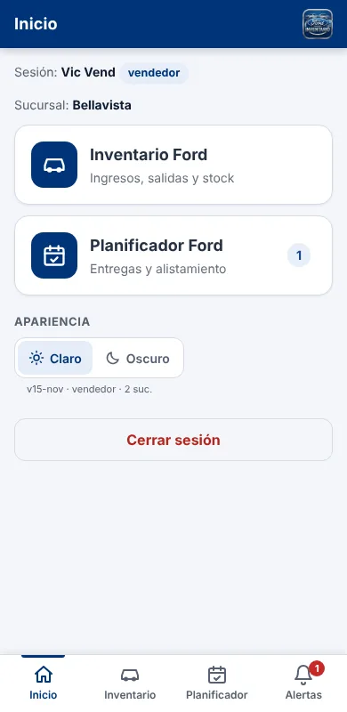
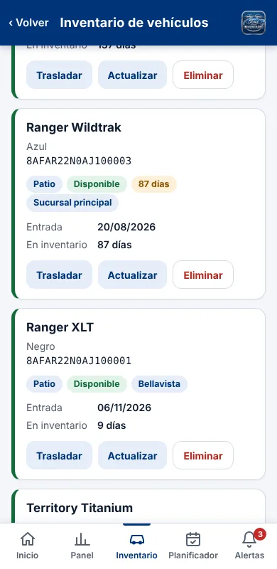
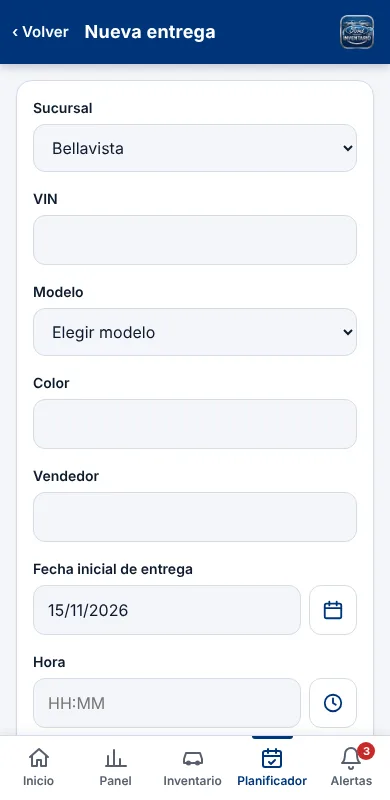
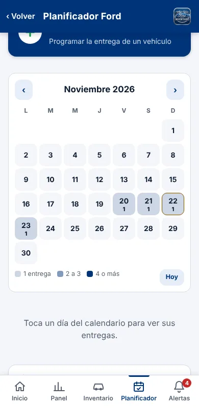

Qué puedes hacer
- Programar entregas y editar las que tú creaste (aparecen con la etiqueta Tuya).
- Ver todas las entregas y el inventario de todas las sucursales (solo lectura) para ofrecer lo que haya en stock.
- Recibir un aviso cuando tu entrega queda lista y un resumen diario con tus entregas de hoy.

Entrar a la app
Abre https://nachioc.github.io/FordInventory/ en tu celular o computador.
- Escribe tu RUT y tu contraseña, y toca Entrar.
- Si es tu primera vez, toca Crear cuenta, escribe tu nombre, RUT y una contraseña. Luego elige tu sucursal y tu rol y espera la aprobación de un administrador: verás «Cuenta pendiente» hasta entonces (toca Reintentar).
- Si te dieron una clave temporal, la app te pedirá crear una nueva antes de seguir.
- Si no recuerdas tu clave, toca Olvidé mi clave o pídele al administrador que la restablezca.
El RUT debe ser válido (la app revisa el dígito verificador).
Instalarla como app
No necesitas tienda de aplicaciones: se instala desde el navegador y queda con su ícono, como cualquier app.
Android (Chrome)
Menú ⋮ → Instalar app (o «Agregar a la pantalla principal»).
iPhone (Safari)
Botón Compartir → Agregar a inicio. Es obligatorio para recibir avisos en iPhone.
Computador
Chrome, Edge o Brave: ícono de instalar al final de la barra de direcciones.
Activar los avisos en el celular
La app te avisa como un WhatsApp, aunque esté cerrada. Recibes: «¡Tu entrega está lista!» cuando el preparador deja tu auto listo, y el resumen diario con tus entregas del día.
- Entra a Alertas (campana).
- En la caja azul toca Activar avisos y acepta el permiso del navegador. La caja desaparece sola cuando ya están activos.
- Toca Enviar aviso de prueba para comprobar que llega.
- Para dejar de recibirlos en ese dispositivo, usa Desactivar avisos.

Modo claro, oscuro y vistas
En Inicio, al final, elige Claro u Oscuro. Se recuerda en ese dispositivo.
Los datos se abren siempre en modo lista (tabla) y puedes pasar a tarjetas con los botoncitos de arriba; la app recuerda tu elección. El planificador es solo un calendario.
En el celular, además de los botones del menú inferior, puedes deslizar el dedo a los lados para pasar entre Inicio, Inventario, Planificador y Alertas.
Consultar el stock
Entra por Inventario. Como vendedor ves el stock de todas las sucursales; elige una en el selector o deja «Todas las sucursales».
- Filtra por modelo, ubicación o estado, o busca por versión, color o VIN.
- Fíjate en la etiqueta de la sucursal de cada auto y en los días en inventario.
- Si un auto está en otra sucursal, avisa al preparador o al jefe para que lo trasladen.

Programar una entrega
- En el Planificador toca Nueva entrega.
- Escribe el VIN: si el auto está en el inventario, la app completa modelo y color.
- Completa vendedor, fecha y hora de entrega, fecha de alistamiento, accesorios, campañas (recall) y el preparador (elige de la lista o déjalo «Sin asignar»).
- Guarda. Los preparadores de la sucursal reciben un aviso; si elegiste a uno en particular, le llega solo a él.

Si la entrega se reagenda, cambia la fecha de entrega vigente: la fecha inicial se conserva y la tarjeta muestra «(inicial …)».
Ver el planificador de entregas
Entra por Planificador. Las entregas se agrupan en Atrasadas, Hoy, Mañana y Próximos días. Las que vencen hoy, mañana o ya vencieron se marcan y suman al número de Alertas.
- Filtra por Activas, Entregadas o Todas, por estado, o busca por VIN, modelo o vendedor.
- Las entregas se ven en un calendario: toca un día para ver sus entregas.

Calendario
El modo calendario muestra el mes completo. Cada día con entregas lleva el número de entregas y se pinta más fuerte mientras más carga tenga (1, 2 a 3, 4 o más). Toca un día para ver sus entregas debajo; usa ‹ › para cambiar de mes y Hoy para volver.

Traslados con grúa
Los autos se mueven entre sucursales con la grúa. Antes se pedía por correo; ahora se pide en la app y queda todo registrado: quién lo pidió, cuándo, quién lo retiró y cuándo llegó.
| Estado | Qué significa |
|---|---|
| Solicitado | Alguien pidió el traslado. |
| Programado | La grúa ya tomó el pedido. |
| En tránsito | El auto salió y va en camino. En el inventario se ve «En tránsito → sucursal». |
| Recibido | Llegó: el auto pasa solo a la sucursal nueva. |
| Cancelado | Se canceló antes de salir. |
Pedir un traslado
- En Inventario toca Solicitar traslado (o entra por Traslados y toca Solicitar traslado).
- Escribe el VIN (o los últimos dígitos) o elige modelo y versión.
- Elige la sucursal de destino, el día (y la hora, si importa), el motivo y si es urgente.
- Toca Solicitar traslado. La grúa, los jefes y los preparadores de las dos sucursales reciben un aviso.
- No hay que esperar aprobación de nadie.
- Un auto con una entrega activa en el planificador no se puede trasladar: primero se entrega o se cambia la entrega de sucursal.
- Puedes cancelar tu solicitud mientras el auto no haya salido.
En Traslados ves el estado de lo que pediste y de las sucursales que ves.
Estados de la entrega
El flujo típico es: Agendado → En preparación → Lista para entregar → Entregado. «Reagendado» se usa cuando cambia la fecha.
- Al pasar a Lista para entregar, el vendedor recibe «¡Tu entrega está lista!».
- Si el grabado de patente está pendiente, la app pide confirmación antes de marcar «Lista» o «Entregado».
- Al pasar a Entregado, el auto sale del inventario solo.
Exportar a Excel o CSV
Al final del Inventario y del Planificador hay dos botones: Exportar CSV y Exportar Excel.
- Se exporta lo que estás viendo: respeta los filtros, la búsqueda y la sucursal elegida.
- El inventario incluye la columna Días en inventario.
- El Excel (.xlsx) necesita internet la primera vez; si no hay, la app te baja un CSV, que Excel también abre con tildes bien.